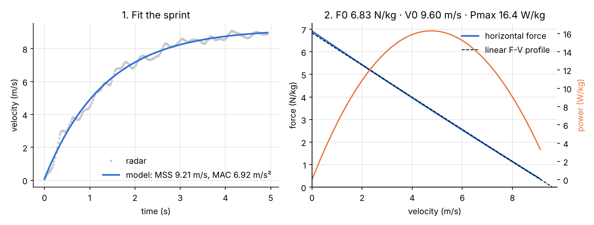
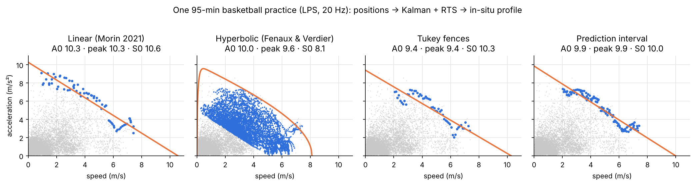
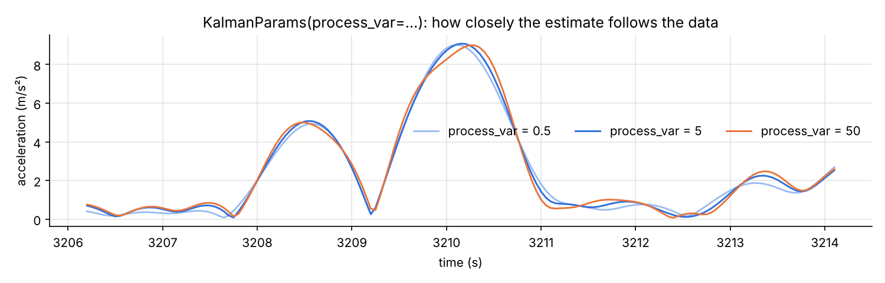

Python library · sport science · biomechanics
Sprint profiling, in Python, tested
From a radar gun, timing gates or GPS/LPS tracking to the acceleration and force-velocity profile of a sprint: Samozino's method, the optimal profile, four in-situ methods and a Kalman filter you can tune. Checked number for number against the R reference, {shorts}.
Get started
Five lines from a radar to a profile
pip install git+https://github.com/Clement0242/sprintfv
import sprintfv as s
d = s.load_jb_morin() # a radar sprint shared by J-B. Morin
fit = s.fit_radar(d["time"], d["velocity"]) # MSS 9.21 m/s, MAC 6.92 m/s²
fv = s.force_velocity_profile(fit.mss, fit.mac, body_mass=75, body_height=1.72)
opt = s.optimal_profile(fv, distance=30) # FV imbalance +44 %: train velocityOr from the command line:
sprintfv radar sprint.csv --mass 75 --height 1.72 --distance 30 --clean.
Force-velocity profile
Samozino's method, with the air
The sprint is fitted by the mono-exponential model, whose distance, acceleration and time to any distance have exact closed forms (the latter through the Lambert W function). The horizontal force adds the athlete's mass times acceleration to air resistance; its linear relation with velocity gives F0, V0 and Pmax, and the ratio of forces gives RFmax and DRF, the orientation of force. The optimal profile for a distance is simulated numerically, so air resistance can be kept.

In-situ profiles
A profile without a sprint test
From training or match tracking data, the profile is the upper envelope of everything the athlete did. Four methods: linear (Morin et al. 2021), hyperbolic (F. Fenaux & C. Verdier), Tukey fences and prediction interval. The hyperbolic envelope bends down at low speed, where nobody produces a maximal acceleration in a game, and so separates the extrapolated A0 from the peak actually produced.

An in-situ profile complements a sprint test; it does not replace it.
In the master's thesis these tools come from (22 elite youth basketball players), the maximal acceleration estimated in games was 18 to 27 % higher than in a 28 m sprint, while maximal speed agreed.
Kalman filter
Every parameter in your hands
Differentiating positions twice amplifies noise. A Kalman filter estimates position,
velocity, acceleration and jerk together; the RTS smoother then uses the samples after each instant as well
as before. KalmanParams exposes the order, process noise, measurement noise, initial state and
smoothing; positions_to_kinematics adds resampling, gaps, segments, court bounds and an optional
Butterworth pre-filter.
k = s.positions_to_kinematics(t, x, y, kalman=s.KalmanParams(order=4, process_var=5, measurement_std=0.05),
prefilter_hz=1.0, bounds=(-2, 32, -2, 17))
v, a = k.profile_points()
s.fit_in_situ(v, a, method="hyperbolic", lambda_divisor=3000)
process_var sets how closely the estimate follows the data.Validation
Checked against three references
| Reference | What is compared | Result |
|---|---|---|
| {shorts} (R, Jovanović) | Timing gates with and without corrections, radar with and without observed MSS, force-velocity profile (F0 635 N, V0 8.85 m/s, Pmax 1405 W) | identical |
| filterpy | Kalman filter and RTS smoother, same settings | gap < 1e-12 |
| Production code of a federation app | Hyperbolic method on the sample session: inliers and parameters | identical |
| Simulated sprints | Recovery of known MSS, MAC, time correction and flying distance under noise | within 0.5–2 % |
References: Samozino et al. 2016 and 2022 (Scand J Med Sci Sports), Morin et al. 2021 (J Biomech), Arsac & Locatelli 2002 (J Appl Physiol), Jovanović, {shorts} (CRAN). Sample data from {shorts}, MIT.